F5 Identity and Access Management Solutions > 200 Series: Assisted Deployment Use Cases Source | Edit on
Lab 4: ADFS Proxy using Pre-Authentication¶
Task 1 - Setup Lab Environment¶
To access your dedicated student lab environment, you will require a web browser and Remote Desktop Protocol (RDP) client software. The web browser will be used to access the Lab Training Portal. The RDP client will be used to connect to the Jump Host, where you will be able to access the BIG-IP management interfaces (HTTPS, SSH).
Click DEPLOYMENT located on the top left corner to display the environment
Click ACCESS next to jumpohost.f5lab.local

Select your RDP resolution.
The RDP client on your local host establishes a RDP connection to the Jumphost.
Login with the following credentials:
- User: f5lab\user1
- Password: user1
After successful logon the Chrome browser will auto launch opening the site https://portal.f5lab.local. This process usually takes 30 seconds after logon.
Click the Classes tab at the top of the page.

Scroll down the page until you see 203 Microsoft Integrations on the left

Hover over tile ADFS Proxy using Pre-Authentication. A start and stop icon should appear within the tile. Click the Play Button to start the automation to build the environment


The screen should refresh displaying the progress of the automation within 30 seconds. Scroll to the bottom of the automation workflow to ensure all requests succeeded. If you experience errors try running the automation a second time or open an issue on the Access Labs Repo.
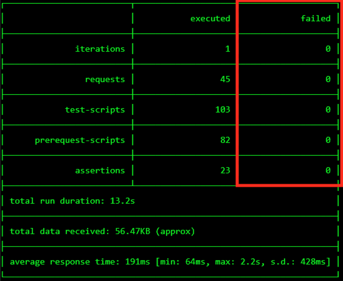
Task 2 - Access the Microsoft ADFS guided configuration¶
From the jumphost browser navigate to https://bigip1.f5lab.local
Login with the following credentials:
- username admin
- password admin
Click on the Access tab located on the left side.

Click Guided Configuration
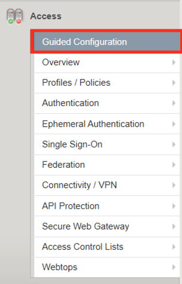
Click Microsoft Integration

Click ADFS Proxy

Click Next
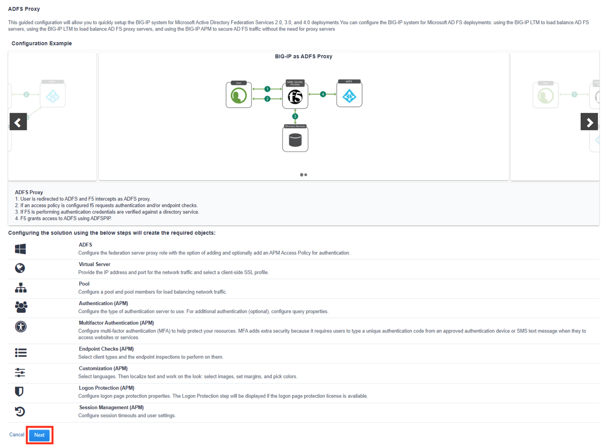
Task 3 - ADFS Proxy Settings¶
Enter the Configuration Name ADFS_PROXY
Enter the ADFS FQDN adfs.acme.com
Select the Authenticatin Method Access Policy Authentication
Select Access Policy Authentication Type Only Endpoint Checks
Click Save & Next

Task 4 - Virtual Server Properties¶
Enter the Destination Address 10.1.10.101
Select the Client SSL Certificate acme.com-wildcard
Select the Associated Private Key acme.com-wilcard
Click Save & Next

Task 5 - ADFS Server Pool Properties¶
Enter the IP address 10.1.20.13
Click Save & Next

Task 6 - Authentication Properties¶
From the Choose Authentication Server dropdown select Create New

Enter the Domain Name f5lab.local
Select Use Pool
Select Domain Controller Pool Name AD_POOL
For Domain Controllers enter the IP address 10.1.20.7 and Hostname dc1.f5lab.local
Enter Admin Name admin
Enter Admin Password admin
Enter Verify Admin Password admin
Click Save & Next

Task 7 - MFA Properties¶
Click Save & Next
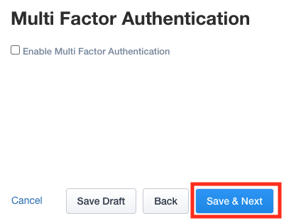
Task 8 - Endpoint Check Properties¶
Click Save & Next
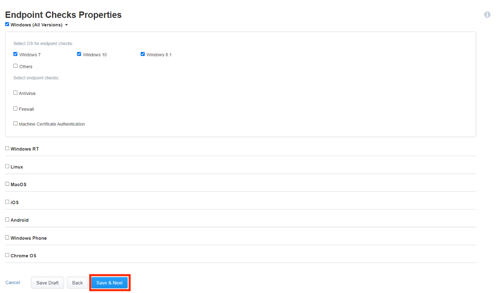
Task 9 - Customization Properties¶
Click Save & Next
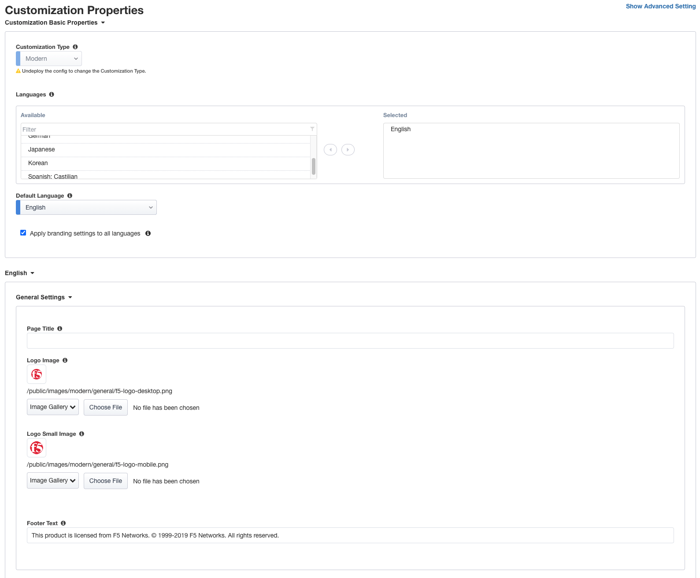

Task 10 - Logon Protection Properties¶
Click Save & Next

Task 11 - Session Management Properties¶
Click Save & Next
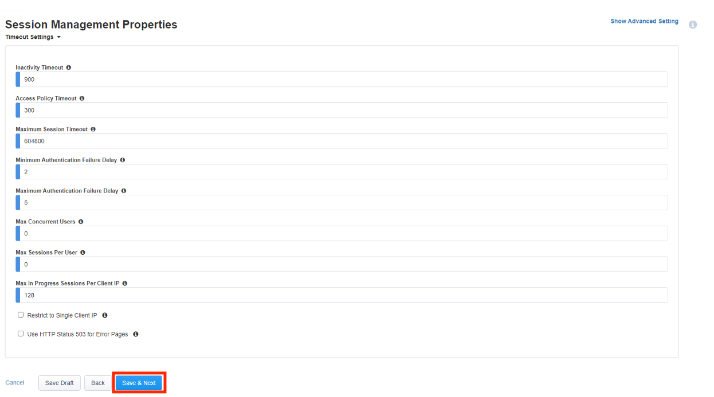
Task 12 - Summary¶
Click Deploy
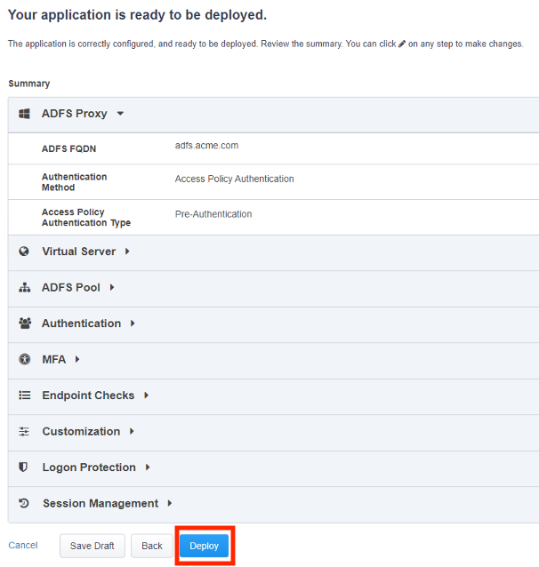
Click Establish Trust
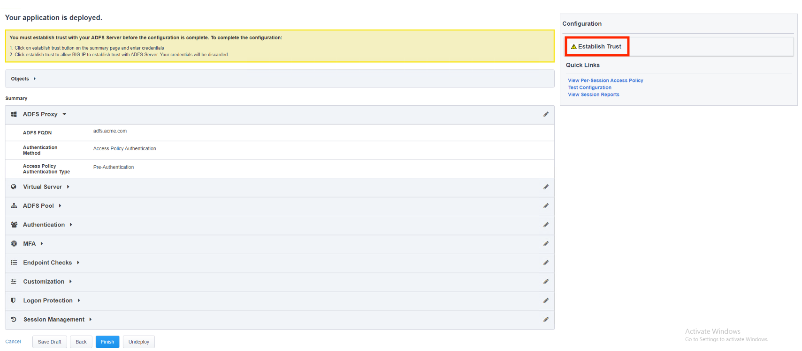
Enter the Username admin
Enter the Password admin
Click Establish Trust

A certificate appears under the Establish Trust section signifying the trust was successfully established.
Click Finish

The configuration has been successfully deployed
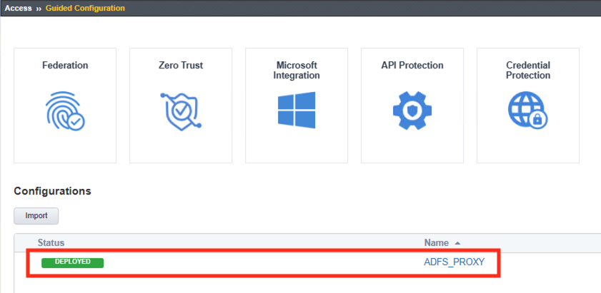
Task 13 - Test APM Authentication¶
On the jumphost open a webbrowser and navigate to https://sp.acme.com. You will redirected to https://adfs.acme.com
Enter the username user1
Enter the password user1
Click Logon
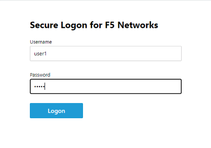
After successful login at ADFS you redirected to http://sp.acme.com

Task 14 - Lab Cleanup¶
From the jumphost browser navigate to https://bigip1.f5lab.local
Login with the following credentials:
- username admin
- password admin
Navigate to Access -> Guided Configuration in the left-hand menu.
Click the Undeploy button

Click OK when asked, “Are you sure you want to undeploy this configuration?”
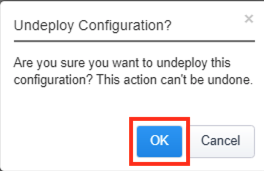
Click the Delete button once the deployment is undeployed

Click OK when asked, “Are you sure you want to delete this configuration?”

The Configuration section should now be empty

From a browser on the jumphost navigate to https://portal.f5lab.local
Click the Classes tab at the top of the page.
Scroll down the page until you see 203 - Microsoft Integration on the left
Hover over the tile ADFS Proxy using Pre-Authentication. A start and stop icon should appear within the tile. Click the Stop Button to start the automation to delete any prebuilt objects

The screen should refresh displaying the progress of the automation within 30 seconds. Scroll to the bottom of the automation workflow to ensure all requests succeeded. If you you experience errors try running the automation a second time or open an issue on the Access Labs Repo.

This concludes Lab 4.